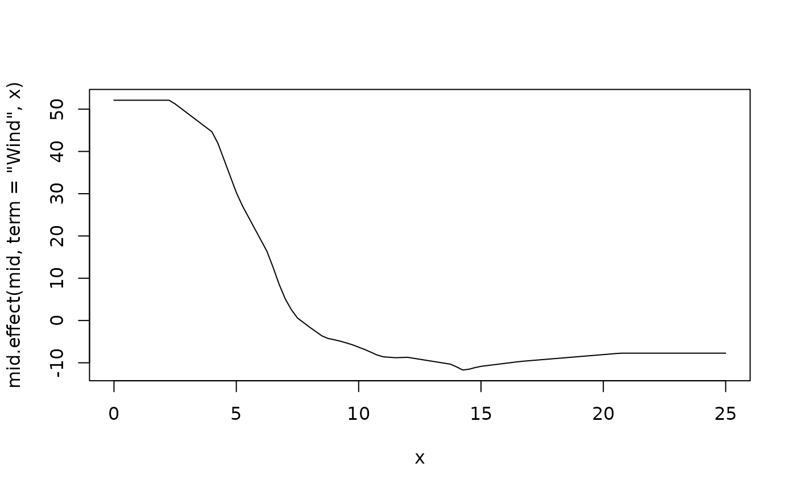
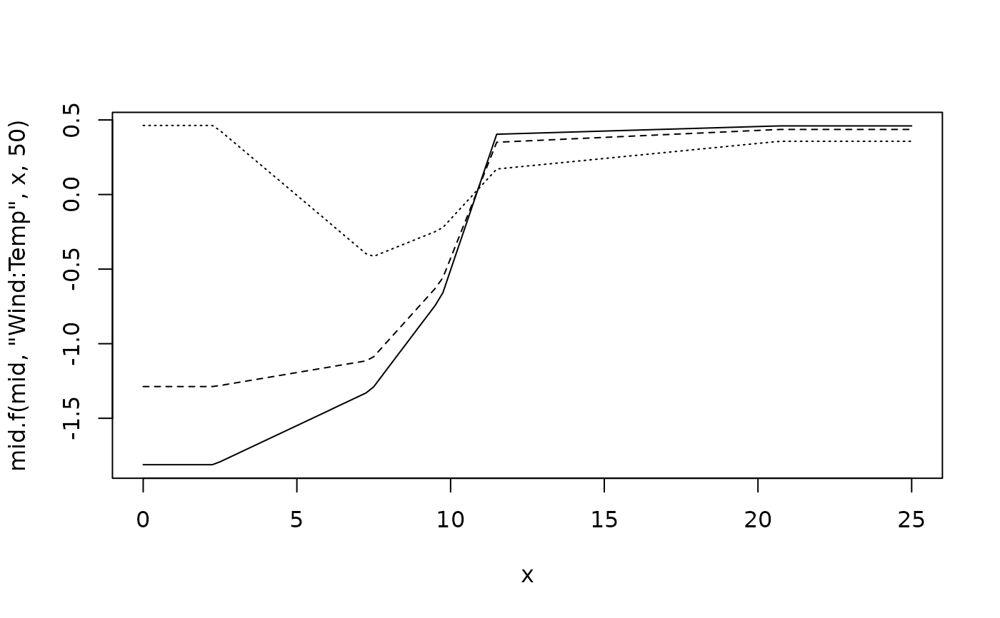

mid.effect() calculates the contribution of a single component function of a fitted MID model.
It serves as a low-level helper function for making predictions or for direct analysis of a term's effect.
mid.f() is a convenient shorthand for mid.effect().
Arguments
- object
a "mid" object.
- term
a character string specifying the component function (term) to evaluate.
- x
a vector of values for the first variable in the term. If a matrix or data frame is provided, values of the related variables are extracted from it.
- y
a vector of values for the second variable in an interaction term.
Value
mid.effect() returns a numeric vector of the calculated term contributions, with the same length as x and y.
Details
mid.effect() is a low-level function designed to calculate the contribution of a single component function.
Unlike predict.mid(), which is designed to return total model predictions, mid.effect() is more flexible.
It accepts vectors, as well as data frames, as input for x and y, making it particularly useful for visualizing a component's effect in combination with other functions, such as graphics::curve().
For a main effect, the function evaluates the component function \(f_j(x_j)\) for a vector of values \(x_j\). For an interaction, it evaluates \(f_{jk}(x_j, x_k)\) using vectors \(x_j\) and \(x_k\).
Examples
data(airquality, package = "datasets")
mid <- interpret(Ozone ~ .^2, data = airquality, lambda = 1)
#> 'model' not passed: response variable in 'data' is used
# Visualize the main effect of "Wind"
curve(mid.effect(mid, term = "Wind", x), from = 0, to = 25)

# Visualize the interaction of "Wind" and "Temp"
curve(mid.f(mid, "Wind:Temp", x, 50), 0, 25)
curve(mid.f(mid, "Wind:Temp", x, 60), 0, 25, add = TRUE, lty = 2)
curve(mid.f(mid, "Wind:Temp", x, 70), 0, 25, add = TRUE, lty = 3)
